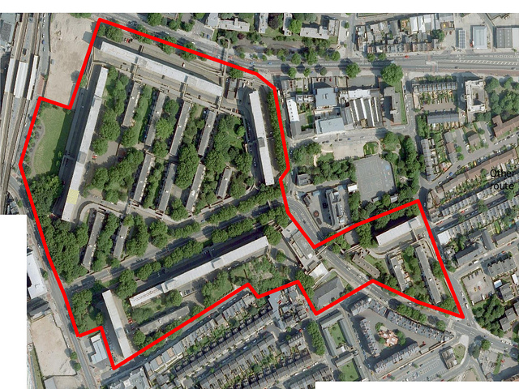

What was once a thriving community has now been scattered all
over Southwark. Southwark's regeneration plans are a miserable failure. Everyone who has worked on the regeneration at the Elephant should be thoroughly ashamed of themselves.
I feel quite angry when people call the estate a slum. It’s not a slum and it never has
been. It was run down because of the regeneration. What we were told once is that they are trying to ‘introduce a better
class of people to the elephant and castle.’ Well I said ‘you can’t get a better class of people than us.’
Myself and other residents moved into inferior alternative accommodation, thinking that we would have the right to return to brand new homes when they were built. Now this will never materialise – we have been deceived.
We lived here for 35 years. That's a lifespan to a lot of people, and then to be forcibly moved out of it. Why? because this land is worth millions. They want to get rid of the social housing and build properties for the rich, like the famous Strata Tower across the way.
The whole farrago of Heygate being a Muggers’ Paradise is just that, a farrago of half truths and lies put about by people who should have known better.
This website has been created by current and former residents of the Heygate estate who are upset about the regeneration scheme: we have been ousted from our homes and community on the back of broken promises by Southwark council and its development partner Lend Lease. Many of us were reluctant to leave our homes and agreed only on the basis that we would be able to return to new homes on the site when they were built. The recent revelation that the new affordable housing will be at the new 'affordable' rent of up to 80% market rent, means that most of us will remain permanently displaced from the area. To add insult to injury, Southwark and its development partner have issued press statements discrediting the estate and misrepresenting events. This website is an attempt to set the record straight in providing a more accurate portayal of life on the estate and events surrounding the regeneration.
We are currently making a short film comprising interviews with former residents, which will be published online here in Autumn 2013. In the meantime check out our timeline or Frequently Asked Questions section below.
Despite being declared structurally sound, and despite evidence showing that the estate's maintenance costs were below average compared to the rest of the council's stock, Southwark claims that it couldn't afford to maintain the estate. Elsewhere it claims that demolition will unlock the economic potential of the site and help prosper from its location. However, recent leaked documents show that the council will actually be making an overall loss on the sale of the Heygate site, while developer Lend Lease is set to make £194 million profit from its purchase. A recent report by global architect Gensler showed that flats on the estate could be refurbished and modernised for just £14,000 per unit.
Muggers' Paradise?
Despite having a crime rate 45% below the borough average, the council claims that the estate suffered from crime and antisocial behaviour issues. As a result of the council and its development partner's media strategy and its promoted use as a film backdrop for a large number of gang and violence-related movies like 'Harry Brown', the estate has gained what we believe is a wholly undeserved reputation.

Concrete Fortress?
The council and its development partner claim that the Heygate estate is a bad design because it restricts permeability with surrounding areas. Councillor Colley recently described it as a 'concrete fortress' and a 'blight on the landscape'. However, those who are familiar with the area know that the Heygate is situated alongside one of London's busiest roads: the A2, which has traffic volumes comparable to the M25. Tim Tinker, the Heygate estate's architect claims that the redvelopment plans fail to take this into account. He claims the new plans do nothing to improve connections across the A2 and that they fail to screen the site from associated traffic noise and pollution. Tinker's design in which the current perimeter blocks screen the estate very effectively, was recently defended at a public inquiry into the redevelopment. Those who are brave enough to venture into the estate always remark upon the sense of tranquility. Concerns were also raised at the inquiry about the large number of mature trees due to be felled, to make way for what is supposedly London's greenest regeneration scheme.
Where did the Residents go?
Heygate residents were originally promised new homes in the replacement development and in a number of 'early housing' developments at the Elephant & Castle. Despite protests that the early housing developments had not yet been built, a decision was taken by the council executive in June 2007 to bring forward the decant of the estate. Tenants were subsequently forced to rehouse themselves via the council's 'homesearch' bidding system for void council properties elsewhere in the borough. Eviction proceedings were systematically initiated against those residents who had failed to bid and accept a property within a period of six months. According to a document tabled during the Feb 2013 Public Inquiry, 198 households were issued with Notices to Seek Possession in total. Tenants were highly dissatisfied with the process, and many were forced to move into unsuitable alternative accommodation in distant corners of the borough. An internal report from Oct 2008 shows a total of 315 households bidding on just 35 available properties in the council's homesearch system. Protest was subdued by the promise of a 'right to return' to new homes built on the site once the first phase of development was completed. However the recently approved planning application proposes the controversial new 'affordable rent' tenure, which is beyond the means of most former residents.
What is Gentrification?
Gentrification is the displacement of people on lower incomes by those on higher incomes. This can be municipal gentrification as with the Heygate redevelopment where low income families are forced out and 1,100 social housing units are replaced by private housing. Or it can be market-led gentrification where people are forced to relocate simply because of the associated rise in rents within an area. Large scale redevelopments such as this also result in many small businesses and independent retailers being forced out, as the nature of the development model requires chain stores and supermarkets to sign up to pre-letting agreements with developers. Far from creating a more mixed community, documents submitted at the Feb 2013 Heygate CPO Public Inquiry show that the Elephant & Castle regeneration will reduce the amount of social housing in the area to just 8%.


 The Guardian - The Reconfiguration of London is akin to Social Cleasing (27/3/2013)
The Guardian - The Reconfiguration of London is akin to Social Cleasing (27/3/2013)